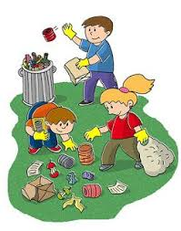
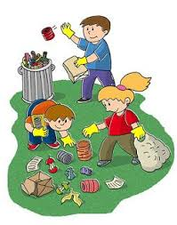
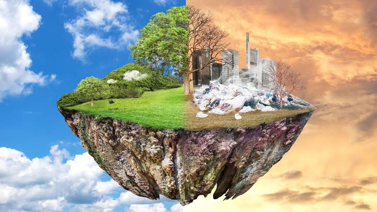
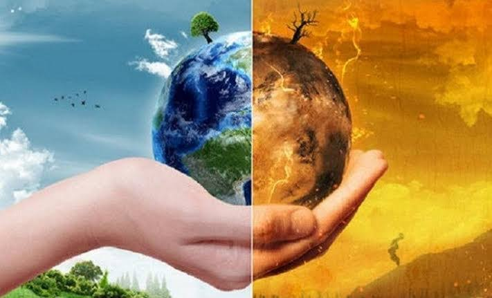

INFORMACION RESALTADA POR SPAN Es el espacio en el que se desarrolla
la vida de los distintos organismos favoreciendo su interacción.
En él se encuentran tanto seres vivos como elementos sin vida y
otros creados por la mano del hombre.
PRUEBA-Span Cuidar el medio ambiente es esencial para proteger la salud humana, preservar la biodiversidad, asegurar la disponibilidad de recursos naturales para futuras generaciones y combatir el cambio climático. Estas acciones son fundamentales para mantener el equilibrio ecológico y garantizar una vida sostenible en el planeta.
 

PROYECTO AMBIENTAL El trato del ser humano con el medio ambiente ha evolucionado desde una relación sostenible en tiempos antiguos, cuando las sociedades eran cazadoras-recolectoras y agrícolas, a una explotación intensiva durante la Revolución Industrial, marcada por el uso masivo de combustibles fósiles y la contaminación. En el siglo XX, la conciencia ambiental creció, llevándose a cabo esfuerzos globales para abordar problemas como el cambio climático y la pérdida de biodiversidad. Hoy en día, la sostenibilidad y la protección ambiental son prioridades en muchas políticas y prácticas a nivel mundial.
 